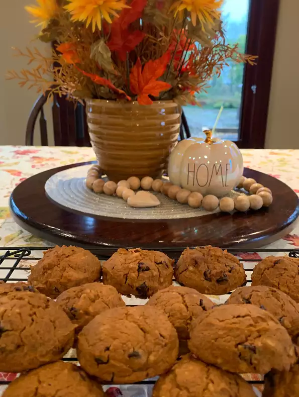

Spoopy Pumpkin Spice Cookie Recipe

Description
This recipe requires about 15 minutes of prep time, and 20 minutes of baking time, with an addional 5 minutes of cooling time, bringing the total time estimate for this recipe to about 40 minutes.
If followed correctly this recipe will yield 24 servings of deliciously spooky Pumpkin Spice Cookies! So without further ado let's get started!
Ingredients you will need for this recipe:
- 1 (15.25 ounce) package spice cake mix
- 1 (15 ounce) can solid pack pumpkin
Easy enough right?
Steps for baking:
- Preheat the oven to 350 degrees F. Grease cookie sheets.
- Stir together cake mix and pumpkin in a large bowl until well blended. Drop by rounded spoonfuls onto the prepared cookie sheets.
- Bake in the preheated oven until centers are set, 18 to 20 minutes. Allow cookies to cool on the baking sheets for 5 minutes before transferring to a wire rack to cool completely.
- Enjoy!
This recipe was found on this awesome site.